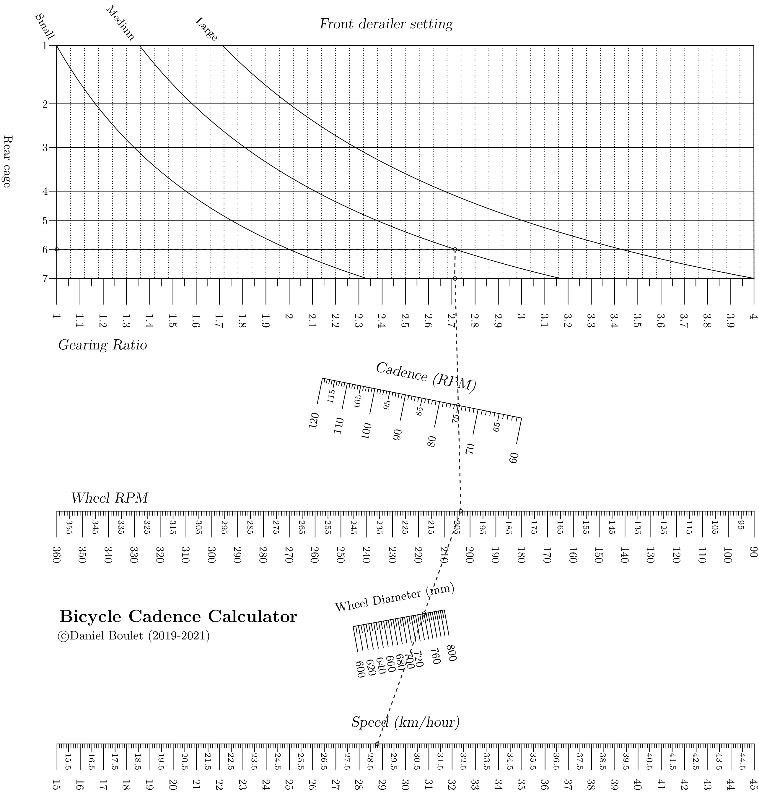

Bicycle Cadence¶
Theory and background¶
Choosing the correct gears on a bicycle allows a cyclist to maintain a comfortable cadence. A higher cadence helps reduce muscle fatigue [tra21] though it does put more stress on heart and lungs. However a lower cadence for the same power output puts more stress on the rider’s knees, hips and back. [the21] Furthermore, cycling cadence will vary widely with beginning cyclists peddling more slowly (60-85 rpm) and professionals exceeding 100 rpm under certain conditions. Generally, a good cadence in cycling is between 80-100 rpm. [Hur21] The correct gear ratio can help the rider maximize their speed with a comfortable cadence.
A bicycle’s speed is the product of the wheel diameter (e.g. 700mm), the wheel’s rotation rate (in rpm) and \(\pi\). The wheel’s rotation rate is a function of the rider’s cadence and the front to rear gear ratio. As in the previous example, pairs of discrete values such as the number of teeth on the front and rear sprockets are easily represented on a Type 5 block. This nomograph combines a Type 5 block (to calculate gearing ratio) with a pair of Type 2 blocks to calculate the rider’s speed given their cadence and gear settings.
Generated nomograph¶
Source code¶
1"""
2 ex_bicycle_cadence.py
3
4 Bicycle gearing cadence and speed calculator
5"""
6from pynomo.nomographer import *
7from pyx import *
8import sys
9sys.path.insert(0, "..")
10pyx.text.set(text.LatexEngine)
11
12
13gearing = {
14 'block_type': 'type_5',
15 'wd_tag': 'ratio',
16
17 'u_func': lambda u: u,
18 'v_func': lambda x, v: v/x,
19
20 # teeth on rear cage
21 'u_values': [12.0, 14.0, 16.0, 18.0, 21.0, 24.0, 28.0],
22 'u_scale_type': 'manual point',
23 'u_manual_axis_data': {12.0: '7', 14.0: '6', 16.0: '5', 18.0: '4', 21.0: '3', 24.0: '2', 28.0: '1'},
24 'u_title': 'Rear cage',
25
26 # teeth on front derailer
27 'v_values': [28.0, 38.0, 48.0],
28 'v_scale_type': 'manual point',
29 'v_manual_axis_data': {28.0: 'Small', 38.0: 'Medium', 48.0: 'Large'},
30
31 'wd_tick_levels': 2,
32 'wd_tick_text_levels': 1,
33 'wd_tick_side': 'right',
34 'wd_title_opposite_tick': True,
35 'isopleth_values': [[14.0, 38.0, 'x']],
36
37}
38
39
40wheelrpm = {
41 'tag': 'wheelrpm',
42 'u_min': 90.0,
43 'u_max': 360.0,
44 'scale_type': 'manual point',
45 'function': lambda u: u,
46}
47
48crankrpm = {
49 'u_min': 60.0,
50 'u_max': 120.0,
51 'function': lambda u: u,
52 'title': r'\large \slshape Cadence (RPM)',
53 'tick_levels': 3,
54 'tick_text_levels': 2,
55 'scale_type': 'linear smart',
56 'tick_side':'left',
57 'title_draw_center': True,
58 # 'title_distance_center': -0.5,
59}
60
61ratio = {
62 'scale_type': 'manual point',
63 'tag': 'ratio',
64 'u_min': 1.0,
65 'u_max': 4.0,
66 'function': lambda u: u,
67 'tick_levels': 3,
68 'tick_text_levels': 1,
69}
70
71
72rotation = {
73 'block_type': 'type_2',
74 'f1_params': wheelrpm,
75 'f2_params': crankrpm,
76 'f3_params': ratio,
77 'isopleth_values': [['x', 75, 'x']],
78}
79
80
81speed = {
82 'u_min': 15.0,
83 'u_max': 45.0,
84 'function': lambda u: u,
85 'title': r'\large \slshape Speed (km/hour)',
86 'tick_levels': 5,
87 'tick_text_levels': 2,
88 'scale_type': 'linear smart',
89 'title_draw_center': True,
90 'title_distance_center': -0.5,
91}
92
93diameter = {
94 'u_min': 600.0,
95 'u_max': 800.0,
96 'function': lambda u: u*3.1415927*60.0/1000000.0,
97 'title': r'Wheel Diameter (mm)',
98 'tick_levels': 2,
99 'tick_text_levels': 1,
100 'scale_type': 'linear smart',
101 'title_draw_center': True,
102 'title_distance_center': -0.5,
103
104}
105
106wheelrpm2 = {
107 'tag': 'wheelrpm',
108 'u_min': 90.0,
109 'u_max': 360.0,
110 'function': lambda u: u,
111 'scale_type': 'linear smart',
112
113 'title': r'\large \slshape Wheel RPM',
114 'title_x_shift': -18.5,
115 'tick_levels': 5,
116 'tick_text_levels': 3,
117}
118
119
120speedblock = {
121 'block_type': 'type_2',
122 'f1_params': speed,
123 'f2_params': diameter,
124 'f3_params': wheelrpm2,
125 'mirror_x': True,
126 'isopleth_values': [['x', 750.0, 'x']],
127}
128
129
130main_params = {
131 'filename': 'ex_bicycle_cadence.pdf',
132 'block_params': [gearing, rotation, speedblock],
133 'transformations': [('rotate', 0.01), ('scale paper',)],
134 'title_str': r'\Large \textbf{Bicycle Cadence Calculator}',
135 'title_x': 3.5,
136 'title_y': 3.5,
137
138 'extra_texts': [
139 {
140 'x': -0.5,
141 'y': 11.3,
142 'text': r'\large \slshape{Gearing Ratio}',
143 },
144 {
145 'x': 7.0,
146 'y': 20.5,
147 'text': r'\large \slshape{Front derailer setting}',
148 },
149 {
150 'text': r'\copyright Daniel Boulet (2019-2021)',
151 'x': -0.5,
152 'y': 3.0,
153 },
154
155
156 ],
157 # 'make_grid':True,
158
159}
160
161Nomographer(main_params)